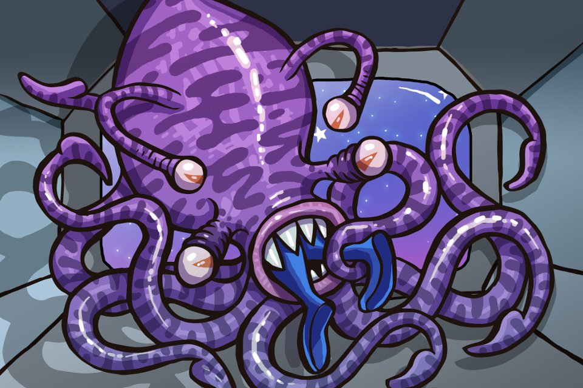

<div>
    
    <!--  -->
    <div style="margin: 10px">
        <button (click)="prev()">Anterior</button>
        <button (click)="next()">Següent</button>
    </div>

    <p class="scene-txt" *ngFor="let scene of scenes; let i = index;"
        [ngClass]="{'colored-bg': i == getCurrentScene()}">
        {{scene.text}}
    </p>
    <p style="text-align: center;">Current scene: {{getCurrentScene()}}</p>

</div>